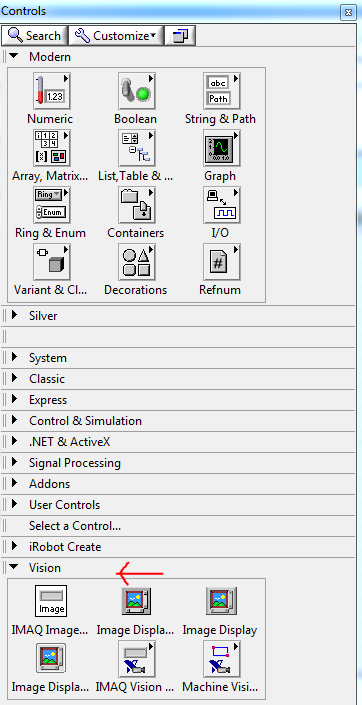
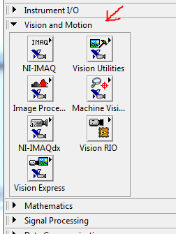
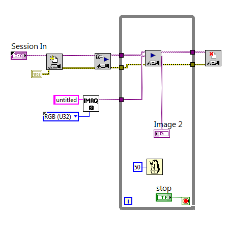
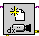
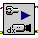
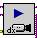
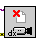

A LabVIEW vision module can be installed with LabVIEW. The Vision module gives the programmer access to machine vision functions. This page will show how to setup the vision module and an example VI to read and display a live webcam feed.
To begin, the NI vision package will need to be downloaded and installed from NI. Next, in order to use a webcam to retrieve images the NI IMAQ drivers must be installed. Once these steps are completed, the VI controls panel will contain a new category, labelled Vision.
The block diagram will have a new set of functions, labelled Vision and Motion.

While the NI vision installation also installed some example VI's, we will not use one of those here. Here we will use a very basic example to demonstrate how to read from and display a live feed of a computers webcam, which can be downloaded here. A step by step video for creating the VI is found here. The block diagram for the example VI is shown below.

The example uses an IMAQ session, in this case our webcam, as input and outputs to an image display in a loop. The session is first passed to the Camera Open express VI , which initializes the camera. The session is then passed to the Initialize Grab VI , which gets the camera ready to take a picture. Then we enter the loop where the camera takes a picture  every 50 milliseconds and sends it to the display. When the loop is stopped, the camera connection is closed .